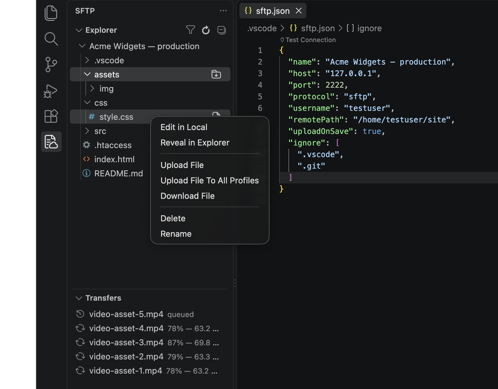

Extension for Visual Studio Code · VSCodium · Open VSX
SFTPresso
Sync files over SFTP (SSH) or FTP/FTPS without leaving your editor. Upload on save, browse a Remote Explorer, diff and compare folders — the actively maintained fork of vscode-sftp.
code --install-extension jmwerk.sftpresso

sftp.json with its Test Connection CodeLens. Every part of this page is a click-through of the same UI — try the SFTP icon in the Activity Bar.Edit locally, deploy on save
Keep your editor, keybindings, and tooling. Every save mirrors to a web server, staging box, or embedded device — or on demand, or continuously via the file watcher.
A file manager for your server
Browse, create, rename, move, and delete on the remote from the Remote Explorer. Filter huge trees live, drag files in from your OS, and watch each transfer's progress.
Safe by default
Passwords live in the OS keychain, SSH host keys are verified against your own known_hosts, and automatic operations wait for Workspace Trust.
Why this fork
SFTPresso descends from liximomo's original SFTP plugin by way of Natizyskunk's vscode-sftp. As of 2026 this is where fixes and features land: a migration to the basic-ftp client, secure password storage, a Transfers view with byte-level progress, a guided config wizard, SSH host key verification, parallel-chunk transfers, and a modern esbuild + TypeScript toolchain — every release is published to the Marketplace and Open VSX automatically.
sftp extension by @liximomo or @Natizyskunk? Both register the same sftp.* commands, so SFTPresso detects an enabled copy on startup and offers to reveal it so you can disable it.